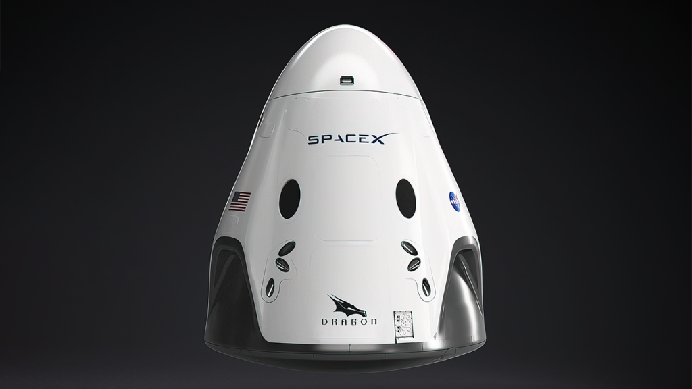

Hyperblog
Tu blog de Cabecera
Este es el titulo atractivo e interesante del post
Y este es el párrafo de inicio donde vamos a explicar las cosas incréibles que se pueden hacer con ramas

Los blogs son la mejor forma de compartir informacion y tus ideas. mucho mas que ir a conferecnias o salir en Youtube. Excepto si eres un rockstar. Pero estadisticamenteno lo eres...por ahora.
suscribete y dale like